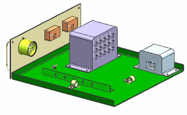

Open assembly rte1_drawer_assm_1.
This assembly contains several different devices as well as structural parts (the drawer hardware assembly).
Two meters and a rotary switch mounted on the front panel.
A processor (light blue).
A control unit (medium lavender).

Each electrical device contains a receptacle for a connector. Each of these receptacles has been qualified with a fitting port and a rotation vector. As you place a connector and select the port on a device, NX uses these ports to properly mate and orient the connector to the device.
There are also clamps of varying sizes on the tray. Some of them have been qualified with stock offset points.
Choose File→Save As.
For Native NX:
In the Save in: box, navigate to student_home.
In the File name: box, type ***_drawer_harness_1, where *** represents your initials.
点击确定。
In a Teamcenter Integration environment:
From the Action list, select Save As New Item.
In the Number box, type ***_drawer_harness_1, where *** represents your initials.
On the Revision row, click Assign.
点击确定。